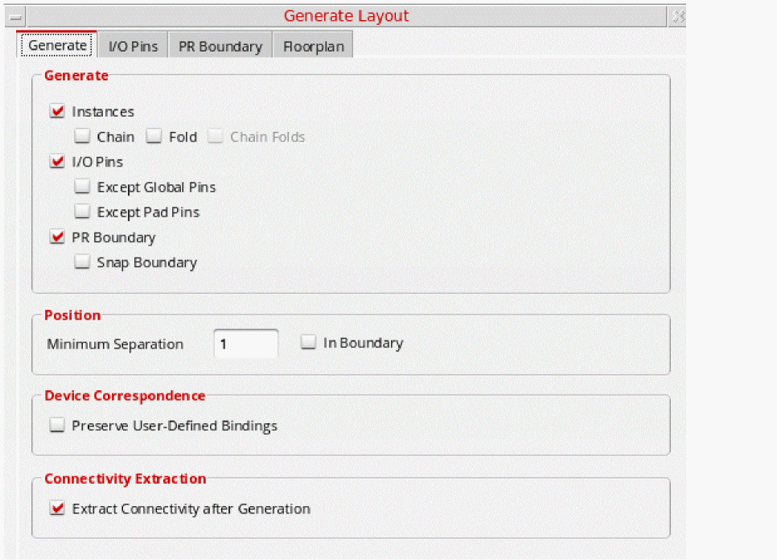

Generating All Components from Source
Use the Generate All From Source command to generate layout representations of the schematic design components. Generate All From Source deletes any existing components in the layout view and generates everything from scratch.
To generate all components from source:
-
From the layout window menu bar, choose Connectivity – Generate – All From Source.
The Generate Layout form is displayed.
The form remembers values set previously in the current Virtuoso session. When you open it for the first time, it shows the default values set in your.cdsenvfile.
You can also load predefined cellview information from an existing layout cellview. - Set the options on the form as needed. See:
-
Click OK in the Generate Layout form.
If you already have design elements in the layout canvas, a message box warns you that this command deletes all layout instances and wiring in the design. -
Click Yes to dismiss the message and generate the layout view you specified.
Layout XL generates instances and pins equivalent to the symbols and terminals in the schematic view. Instances and pins are placed below the place and route boundary in the same relative positions as in the schematic. However, you can choose to place the instances and pins within the place and route boundary (design boundary) by setting thelxGenerateInBoundaryenvironment variable.
Iterated pins are sorted and placed together in the layout. Constraints defined in the schematic are transferred to the layout view, as are the signal types assigned to individual nets.
To transfer the bus terminal and bus bit order (ascending or descending) information from the schematic to the layout, you need to set thecreateImplicitBusTerminalsenvironment variable before running the Generate All From Source command. This allows for the bus information to be implicitly annotated on the layout side, removing the need for running VerilogAnnotate.
Alternatively, you can choose to create bus terminals implicitly by selecting the Create Implicit bus terminals option on the Generation tab.
Any problems encountered during layout generation are reported in the CIW and in a Layout XL Info text window. Check the design against source to get more information on the problems encountered and how to resolve them.
Related Topics
Return to top